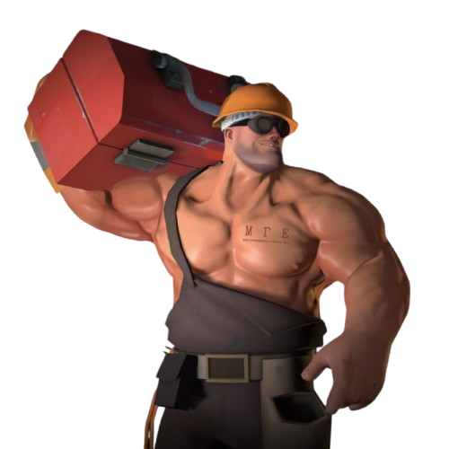
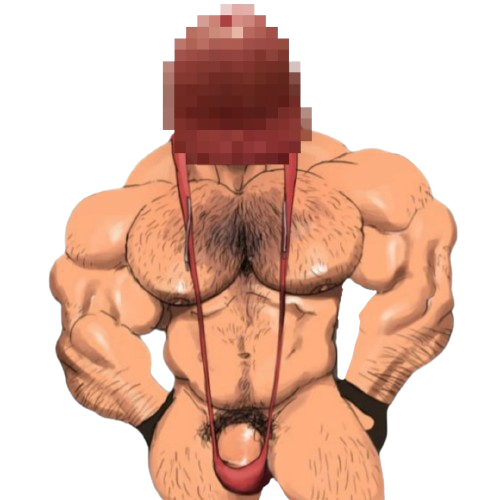
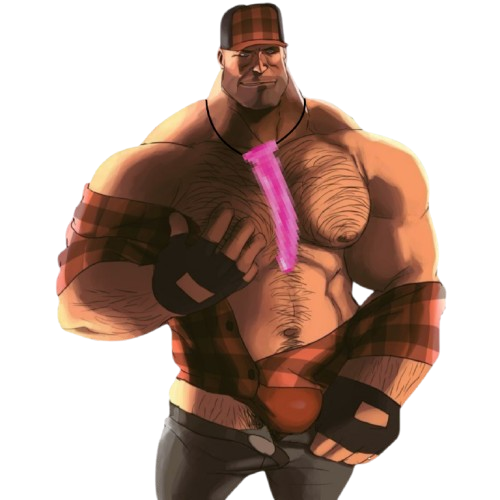

Браток Инженер

Браток Инженер - самый умный представитель МГЕ-братства на Земле. При росте в 2.6 метра, он легко выделяется даже среди своих брутальных собратьев. Инженер не расстаётся с своей техникой, дабы в любой момент поймать слащавого педика.
На груди Братка красуется татуировка МГЕ, под которой написана расшифровка аббревиатуры: Межгалактическая гейская ебля.
Самое интересное - ящик, который он носит на плече. Одним нажатием кнопки он может вызвать голографическую птицу - так называемая Опиумная Птица. Она притягивает сладковатых типов, неизвестным науке образом. Ещё одна способность - звуковая аппаратура. Музыка, которую она производит, даёт необратимый эффект. Ты начинаешь чувствовать тягу к протеину, тягу к братству, тягу к... мужским яйцам.
Великий и Ужасный Членоголовый

Великий и Ужасный Членоголовый (The Great and Terrifying Chlenogolovii) - таинственная и почти мифическая фигура внутри МГЕ-братства. Его существование известно лишь узкому кругу особо посвящённых, а среди обычных людей - только одному выжившему по имени Антон (кодовое имя: 1-15-20). Существо поражает своими размерами: рост достигает 3.7 метров, при этом оно остаётся пугающе подвижным и физически совершенным. Местом его обитания считается заброшенная психиатрическая больница времён СССР, расположенная неподалёку от пригорода Новое Рукоблудово.
Внешне Членоголовый представляет собой гуманоид с мускулатурой уровня других МГЕ-братков, однако его голова - полностью идентична головке человеческого полового органа, увеличенной пропорционально его размерам. Он абсолютно не восприимчив к световым, звуковым и психотронным атакам. Любые попытки вступить с ним в контакт закончились провалом. Только пару лет назад было установлено, что это существо разумно, после его контакта с 1-15-20. Из головы он способен извергать белую вязкую жидкость. При вдыхании вызывает у людей рвоту, слезотечение, дезориентацию и приступы паники. При употреблении внурь жертву парализует или наступает мучительная смерть.
О мотивах существа ничего не известно. Он не общается, не вступает в контакт и не проявляет интереса к интеграции с другими братками. 1-15-20, единственный, кто смог сбежать от Членоголового, последние года живёт под наблюдением, не подозревает о слежке.
Браток с Дилдаком

Браток с Дилдаком - почти самый пугающий представитель МГЕ-братства на Земле, уступая первенство лишь одному... При росте в 2.7 метра и мышечной массе, внушает уважение и страх одним лишь появлением. В отличие от других братьев, этот Браток настроен куда более агрессивно - у него почти всегда в глазах злоба, и он не щадит никого, даже обычных людей, что уже говорить о слащавых педиках.
Главная его загадка — розовый дилдак, висящий у него на шее. Никто из братков не знает, зачем он его носит: то ли просто символ его личной философии или это трофей. Он сам ничего не объясняет.
У него нету свой особенной техники, как у Инженера, лишь традиционный (как посмотреть) паровозик. Как уже было сказано, его жертвой может стать каждый, но людей, которые ходят в зал он не трогает. Но даёт им ультиматум: или ты с МГЕ, или ты скоро будешь.